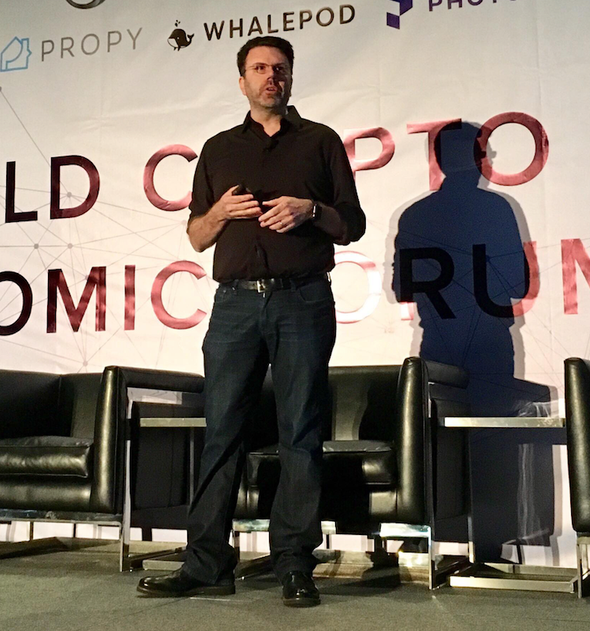

Will Murphy

American tech executive, product manager, software engineer, intrapreneur, entrepreneur
Grew up in Memphis, TN, currently in the Bay Area
A self-taught developer from the age of 12
Former Head of Innovation Labs at Data.ai (formerly App Annie) the app analytics standard
OnDeck Fellow (Founder Fellow and Corporate Innovation Fellow)
Founding Head of Product at Talla, an AI chatbot startup
Co-founded SenseAware, a pioneering IoT FedEx startup
Founder, EPICenter Logistics Innovation Accelerator, sponsored by FedEx
Co-founder, MessagePath, an intelligent copy-editor for business.
Founder, SurfRate, an internet search engine based on user website reviews
I hold multiple patents in the areas of artificial intelligence, IoT, and online ads
Guest lecturer at Stanford and speak at places like MIT VLAB, Global Artificial Intelligence Conference, The AI Conference, General Assembly, World Crypto Economic Forum, and SVI Academy.
My Links
My Projects
Writing
Speaking & Videos
Previous Speaking Engagements
- Stanford University MediaX – Rights, Revenues, and Responsibilities in the Supply Chain of Data
- Stanford University Leadership Garage – Innovation, leadership, and the Silicon Valley mindset
- MIT VLAB – The Machines are Talking Back
- SVI Academy – Innovation in Startups
- Monage, Computer History Museum – CONVERGENCE of Computing, Cryptocurrency, AI, Communications, Messaging and the underlying ecosystems
- World Crypto Economic Forum
- Global Artificial Intelligence Conference – Beyond Chatbots: The future of AI
- General Assembly – Innovators Breakfast Series
- The AI Conference
Patents
- Graph Augmentation for New Applications using Machine Learning Techniques (Pending)
- State Machine Methods and Apparatus Executing Natural Language Communications and AI Agents Monitoring Status and Triggering Transitions - US201662415352P
- Sensor-Based Logistics System - US US8299920B2
- Systems and Methods for Creating and Delivering Digital Assets - US US20150227883A1
- Systems and Methods for Creating and Delivering Digital Advertisements in a Delivery Ad Network - US US20150227968A1
- Systems and Methods for Trip Management - US EP2828838A4